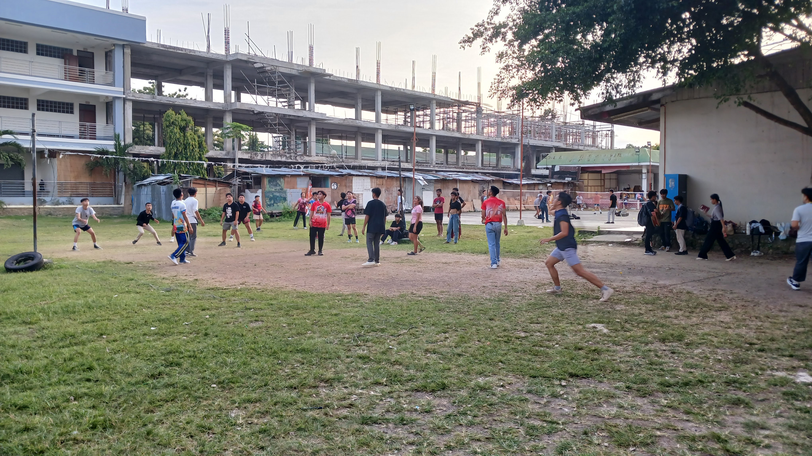
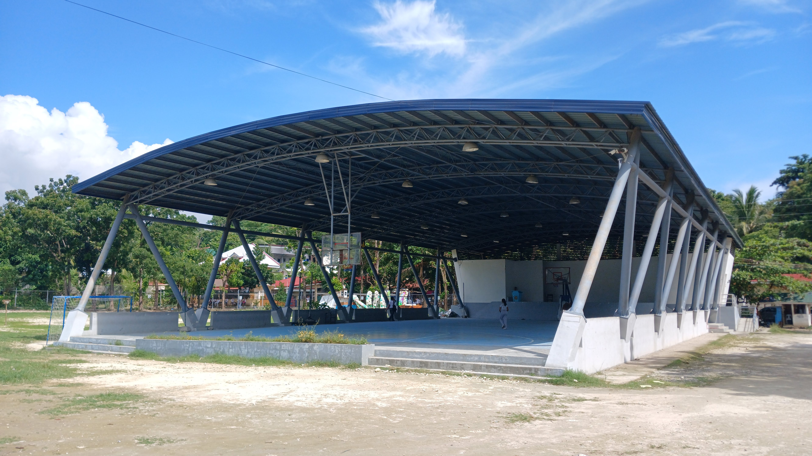
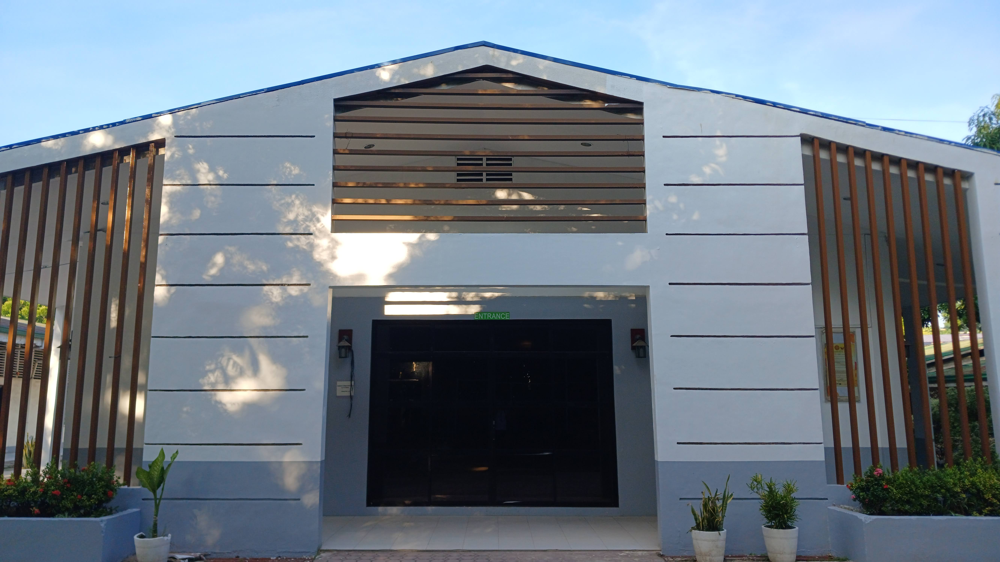

KNTV
Published October 3, 2024 7:16 AM PHT | Updated Oct 4, 2024 1:23 AM PHT

Students playing various sports in quadrangle, including Volleyball (on the left), Badminton(on the right) on Wednesday afternoon inside the campus. Kyle Sabatin, KNTV
This October's intramurals are shaping up to be one of the most exciting events of the year, blending competition,
entertainment, and community spirit.
Athletes across a wide range of sports, including basketball, volleyball, athletics, and football, have been rigorously preparing for months, honing their skills and working on team dynamics to ensure top performance on the day of competition.
Training camps, friendly matches, and intense practice sessions have helped sharpen their abilities, while coaches and trainers focus on physical conditioning, mental resilience, and injury prevention.
The commitment and teamwork displayed by the participants demonstrate the level of passion and pride each team has for their school.
In addition to the sporting events, this year's intramurals will feature cultural showcases, talent shows, and interactive booths, where students can explore various extracurricular activities.
These booths, ranging from food stalls to student organizations, will provide everyone with a chance to relax, have fun, and engage with the community.
One of the highlights of the event will be the series of concerts and performances throughout the week. Local bands, talented singers, and dance troupes are set to take the stage, providing a perfect way to unwind after a day of fierce competition.
Furthermore, the intramurals will also serve as a platform to celebrate the creative talents of students, with art exhibitions.
Athletes across a wide range of sports, including basketball, volleyball, athletics, and football, have been rigorously preparing for months, honing their skills and working on team dynamics to ensure top performance on the day of competition.

Kadasig gym, where basketball matches are held, with other sports like futsal and pickleball, with a stage for the Miss Intramurals. Kyle Sabatin, KNTV
Training camps, friendly matches, and intense practice sessions have helped sharpen their abilities, while coaches and trainers focus on physical conditioning, mental resilience, and injury prevention.
The commitment and teamwork displayed by the participants demonstrate the level of passion and pride each team has for their school.

SAC building for cultural shows, dances, and conventions are held in this building. Kyle Sabatin, KNTV
In addition to the sporting events, this year's intramurals will feature cultural showcases, talent shows, and interactive booths, where students can explore various extracurricular activities.
These booths, ranging from food stalls to student organizations, will provide everyone with a chance to relax, have fun, and engage with the community.
One of the highlights of the event will be the series of concerts and performances throughout the week. Local bands, talented singers, and dance troupes are set to take the stage, providing a perfect way to unwind after a day of fierce competition.
Furthermore, the intramurals will also serve as a platform to celebrate the creative talents of students, with art exhibitions.